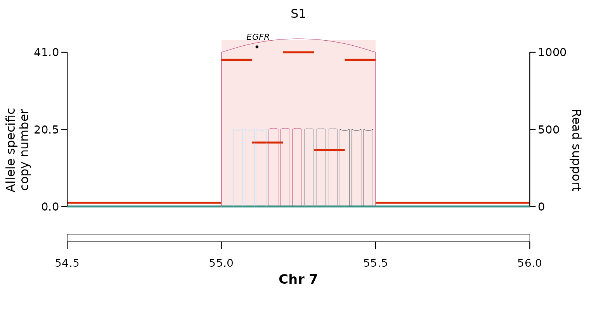
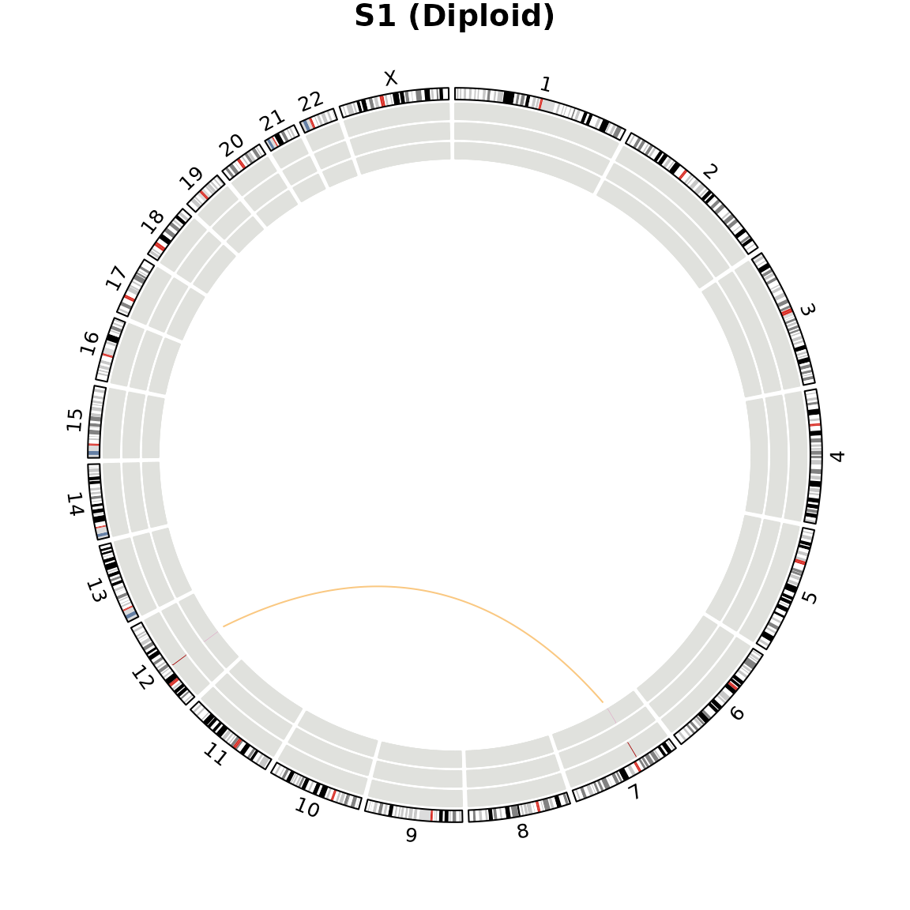
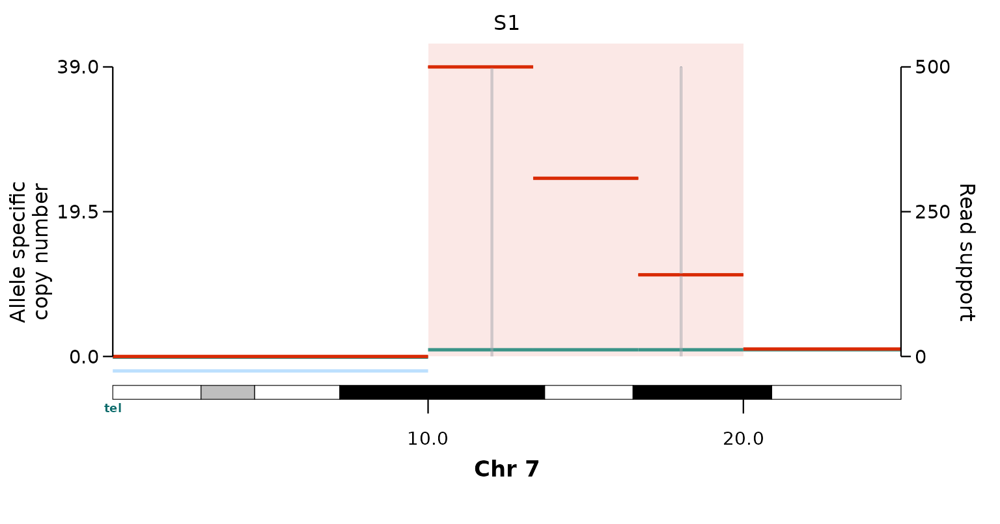
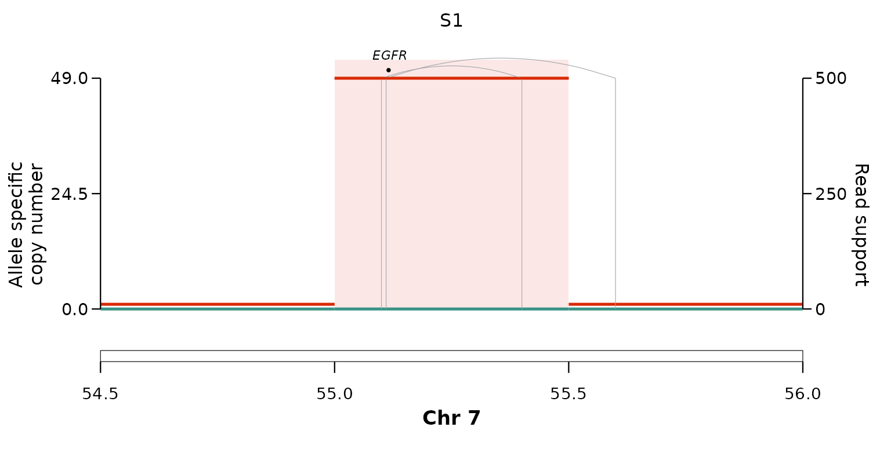
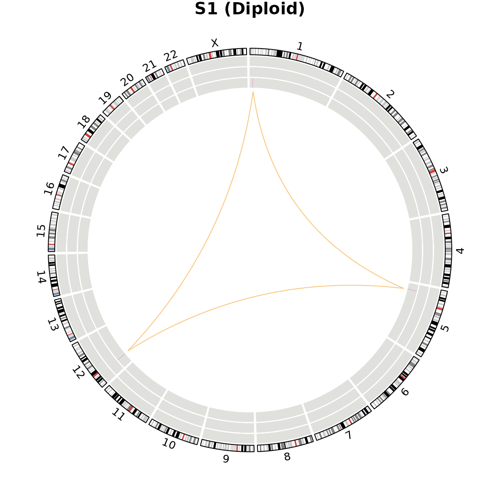

call_simple_excision() asks “is this a
simple-excision circle (an episome)?”. The mechanism
callers ask the complementary question — by which route did
a focal amplification, or a complex rearrangement, form? Each one
takes the same inputs as the episomal caller
(breakpoints_gr, cnv_gr,
cancer_genes_gr, and an optional ecdna_gr) and
returns those breakpoints annotated with one mechanism’s
flag.
The mechanisms are not all amplifications:
chromothripsis-within-an-ecDNA, micronucleation and
breakage–fusion–bridge produce amplified segments, whereas
breakage–replication/fusion and chromoplexy are balanced rearrangement
signatures that need not raise copy number. The callers are also
independent — an amplicon can carry more than one flag
— so the workflow is to run the relevant callers on the same inputs and
join their outputs by WGS_ID + ID.
Each section below shows the call and a plot of the underlying event; the inputs are constructed behind the scenes.
Chromothripsis within an ecDNA
Shattering and random rejoining inside an amplicon.
call_chromothripsis() scores ShatterSeek-style hallmarks
over the amplified footprint: enough internal breakpoints, the four
junction orientations occurring about equally, and an
oscillating copy-number profile.
res <- call_chromothripsis(ecdna_gr, breakpoints_gr, cnv_gr, cancer_genes_gr)
unique(res[, c("chromothripsis", "chromothripsis_conf")])
#> chromothripsis chromothripsis_conf
#> <char> <char>
#> 1: TRUE high
plot_sv_linear(sample = "S1", cnv_data = cnv_data, sv_data = sv_data,
chromosome = "chr7", chromosome_range = matrix(c(54.5e6, 56e6), nrow = 1))
The oscillating copy number and the fan of differently-oriented
internal junctions are the shattering signature; a clean episome (only a
boundary junction) returns chromothripsis = "FALSE".
Micronucleation — two ecDNAs fused in a micronucleus
call_micronucleation() flags an amplicon joined to
another amplified locus on a non-homologous chromosome by a
high-VF interchromosomal translocation. Fusing two different chromosomes
into one amplicon is only possible if both were co-encapsulated — the
signature of two episomal ecDNAs recombined in a micronucleus after
shattering.
res <- call_micronucleation(ecdna_gr, breakpoints_gr, cnv_gr, cancer_genes_gr)
unique(res$micronucleation)
#> [1] "TRUE"A genome-wide view (plot_sv_circos()) shows the two
amplified loci on chr7 and chr12 joined by the translocation arc:
plot_sv_circos(sample = "S1", sv_data = sv_data, cnv_data = cnv_data)
Breakage–fusion–bridge (BFB)
Classical BFB is telomeric: after telomere loss,
sister chromatids fuse and the dicentric bridge breaks unevenly each
cycle, building a fold-back amplicon that is terminal on one
arm, carries a distal deletion to the telomere, and shows
a copy-number staircase. call_bfb()
requires all three, and needs centromere / chromosome-length references
to locate the telomere.
res <- call_bfb(ecdna_gr, breakpoints_gr, cnv_gr, cancer_genes_gr,
centromeres = load_centromeres("hg38"),
chrom_lengths = load_chrom_lengths("hg38"))
unique(res[, c("bfb", "bfb_anchor", "n_foldbacks")])
#> bfb bfb_anchor n_foldbacks
#> <char> <char> <int>
#> 1: TRUE p-telomere 2
plot_sv_linear(sample = "S1", cnv_data = cnv_data, sv_data = sv_data,
chromosome = "chr7", chromosome_range = matrix(c(1, 25e6), nrow = 1))
The distal deletion to the p-telomere and the descending copy-number
staircase are the BFB signature. Drop any one hallmark — a diploid
terminus, a flat plateau, or clustered fold-backs — and the call reverts
to "FALSE".
Breakage–replication/fusion (BRF)
BRF (Mendez-Dorantes / Zhang / Pellman, Nat Genet 2026) leaves adjacent parallel breakpoints — two same-orientation breakends, close together, from distinct junctions. Unlike BFB it is not telomere-gated and need not build a staircase.
res <- call_brf(ecdna_gr, breakpoints_gr, cnv_gr, cancer_genes_gr)
unique(res[, c("brf", "n_parallel_pairs")])
#> brf n_parallel_pairs
#> <char> <int>
#> 1: TRUE 1
plot_sv_linear(sample = "S1", cnv_data = cnv_data, sv_data = sv_data,
chromosome = "chr7", chromosome_range = matrix(c(54.5e6, 56e6), nrow = 1))
Chromoplexy
Chromoplexy (Baca et al. 2013) is a closed,
balanced chain of rearrangements cycling through several
chromosomes back to its start, at low copy number. It is
genome-wide rather than amplicon-anchored, so
call_chromoplexy() takes just breakpoints_gr
and cnv_gr and returns one row per
chain.
res <- call_chromoplexy(breakpoints_gr, cnv_gr)
res[, c("topology", "n_junctions", "n_chromosomes", "chromosomes")]
#> topology n_junctions n_chromosomes chromosomes
#> <char> <int> <int> <char>
#> 1: cycle 3 3 chr1,chr12,chr5
plot_sv_circos(sample = "S1", sv_data = sv_data, cnv_data = cnv_data)
The closed chr1 → chr5 → chr12 → chr1 cycle at diploid copy number is the chromoplexy signature. An open chain, or an amplified cycle (an amplicon, not a balanced event), is not called.
Combining the callers
Because each caller reports one signature and leaves the others
untouched, run the relevant callers on the same inputs and join their
per-breakpoint outputs by WGS_ID + ID. An
amplicon then carries an explicit flag for every mechanism tested —
episomal, chromothripsis,
micronucleation, bfb, brf —
rather than being forced into a single class. See
?call_simple_excision for the shared input contract, and
vignette("reconstruction") for reading the founder junction
off a VF-stratified reconstruction.